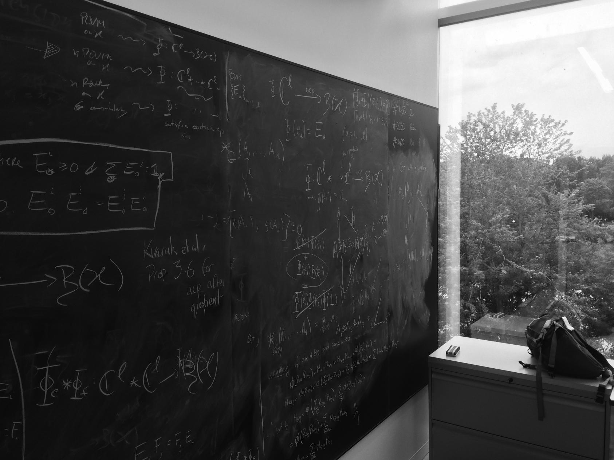

Activities
Seminar series
- Jul 2020– QLOC seminar. Meetings and talks organised by INL's Quantum and Linear-Optical Computation research group.
- Jan 2018–Jul 2019 OASIS. The Oxford Advanced Seminar on Informatic Structures.
- 2013–2019 Discussions of Wolfson's Quantum Foundations Research Cluster
Organised meetings
- Mathematical structures in quantum foundations, Parallel session at ENSPM 2021
- 2nd Workshop on Contextuality as a resource in quatum computation, Oxford, July 2019
- 1st Workshop on Contextuality as a resource in quatum computation, London, June 2016
Programme committees
- WADT 2022 [track chair]. 26th International Workshop on Algebraic Development Techniques.
- QPL 2021. 18th International Conference in Quantum Physics and Logic
- CALCO 2021. 9th Conference on Algebra and Coalgebra in Computer Science
- 2nd DaLí Workshop. Dynamic Logic: New Trends and Applications, Workshop at FM 2019
- Q-turn 2018. 1st Q-turn Workshop: Changing Paradigms in Quantum Science
- TbiLLC 2017. 2th International Tbilisi Symposium on Language, Logic and Computation
Teaching & lecturing
- 2012/13 Teaching Assistant, Categories, Proofs and Processes, University of Oxford.
- 2013/14 Teaching Assistant / Practical demonstrator, Principles of Programming Languages, University of Oxford.
- 2017/18 & 2018/19 Guest lecturer, Categories, Proofs and Processes, University of Oxford.
- 2017/18 & 2018/19 Invited lecturer, 25h module as part of course on Quantum Logic, Universidade do Minho (MSc in Physics Engineering).
- 2018/19 Invited lecturer, 8h module as part of course on Quantum Computing, Universidade de Aveiro (MAPi – Minho–Aveiro–Porto PhD Programme in Computer Science).
Website by Catarina Soares Barbosa